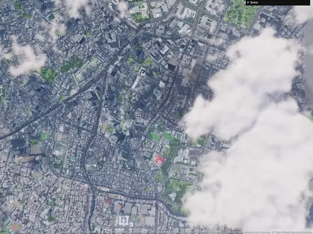
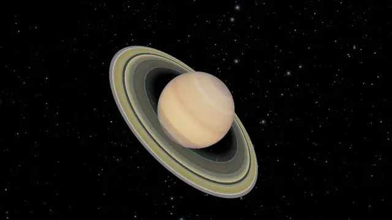
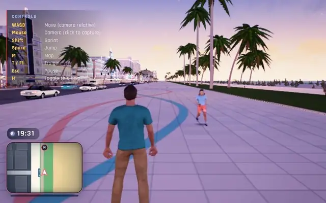
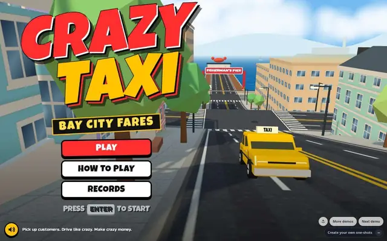
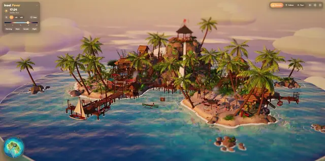
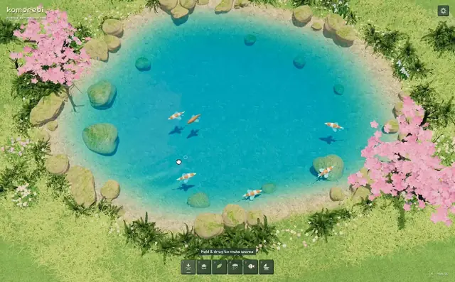
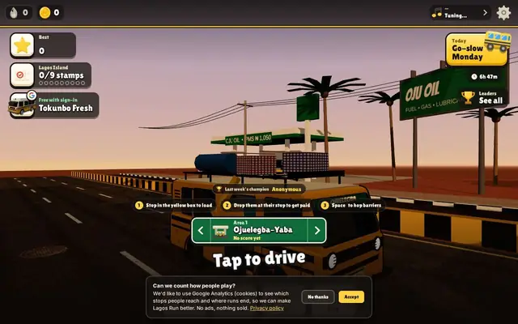
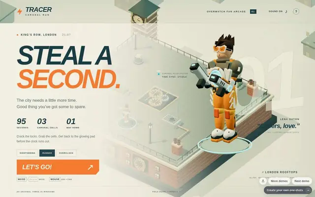

Procedural Tokyo
用开放数据在浏览器里复刻真东京：PLATEAU 真实楼宇、会投影的体积云、守红绿灯的车流和电车，昼夜跟着东京实时时钟走；据作者称 Opus 5.5 帮他搭的。

打开网站 ↗它是什么：一座「真数据 + 程序化细节」的浏览器东京：真实的楼、路、地形，车按路网开、电车按铁路跑，昼夜跟着东京时钟走。
好在哪：今天 8 条里最久让人移不开眼——体积云影子扫过街道、天黑后窗户一格格亮起、钢梁搭出的东京塔，整座城市像活的；而且完全开源，能照着学。
怎么做到的：
- 作者先在电脑上把 PLATEAU 楼宇、OpenStreetMap 路网和 GSI 地形「编译」成 256 米一块的小切片，网页只下载镜头附近的几块，由后台 Web Worker 拼成 3D。
- 渲染是 Three.js r186 + WebGL：楼的窗户、水面倒影、路面标线都在着色器里现画；树、路灯、车用 InstancedMesh 成批画。
- 天空和云用 takram 大气/体积云库，再经 postprocessing 后期加 N8AO 暗部、泛光和色调映射；没有用 WebGPU、React 或 GSAP。
完整技术拆解
今日拆解 · Procedural Tokyo
- Live: https://jeantimex.github.io/tokyo/
- Author / 出品: jeantimex（个人项目，MIT 开源）· 源码 https://github.com/jeantimex/tokyo
- Source: X @jeantimex（2026-10-04 两条帖子，约 427 + 374 赞；社交帖提到 Opus 5.5 帮他搭的——前端包内未出现该字样）
- Bundle: Vite 产物
assets/index-znnzXYiV.js（约 5.3 MB）+assets/tileWorker-CWpwJ78l.js；数据tiles/tokyo/manifest.json（format 7，2026-10-05 刚重新编译） - 证据：对本页 HTML + 主包 + tileWorker 的抓取核对，对照作者 README 与 package.json（详见同目录 EVIDENCE.txt）
为何选它
今天 8 条里「哇」得最久的就是它：不是一个漂亮的小场景，而是一整座按真实数据搭起来的东京——东京站、涩谷十字路口、一根根钢梁搭出来的东京塔，车按真实路网靠左行驶、等红灯，电车沿真实铁路跑，体积云的影子扫过街道，天一黑窗户一格格亮起来。最难得的是它把「真实」和「生成」混得天衣无缝：楼的位置和高度是真的，窗户、霓虹、路面标线是代码现编的。对正在做「半真实半数字地球」主视觉的你，这是最好的参考：真数据打底 + 程序化细节 + 电影感光影。
实际在源码里找到的技术栈
window.__THREE__ 注册处的版本常量 "186"；WebGLRenderer 38 次；作者 package.json：three ^0.186.1ShaderMaterial 16 次、onBeforeCompile 15 次——立面窗户、水面、路面标线都在着色器里「现画」EffectComposer 4、EffectPass、BloomEffect、ToneMappingEffect；package.json：postprocessing ^6.39.5N8AO 6 次（含 "bundled N8AO neural denoise model" 报错文案）；package.json：n8ao ^2.0.1AerialPerspectiveEffect；package.json：@takram/three-atmosphere / three-clouds / three-geospatialnew Worker(tileWorker-*.js)，线程数 Math.min(4, CPU核数/2)；数据是 256 m 一块的二进制切片（manifest tileSize: 256）InstancedMesh 21 次——树、路灯、车、电线杆这类成千上万的重复物体一次画完vite ^8.3.2、lil-gui；包内 lil-gui 66 次（右上角设置面板）WebGPURenderer 0 次——走的是成熟的 WebGL 路线React / gsap / GLTFLoader 均 0 次；树来自 ez-tree 程序化生成，不是导入的 Blender 模型核心效果怎么工作（大白话 + 标明推测）
1. 先「编译」城市，再在浏览器里「拼」城市（确认：README + manifest）
把整个城市原始数据直接塞进网页是不可能的（东京原始数据 3.6 GB）。作者先在自己电脑上跑一个「编译器」：把 PLATEAU 的楼、OpenStreetMap 的路、GSI 的地形，统一换算到同一张「米」为单位的网格里，切成 256 米一块的小二进制文件。网页打开时只下载你镜头附近的几块，像玩开放世界游戏一样边走边加载。
2. 后台工人负责「搭积木」（确认：tileWorker）
切片下载下来后，交给最多 4 个 Web Worker（浏览器的后台线程）把数据变成 3D 网格，主线程只管画画，所以飞起来不卡。
3. 楼是真的，窗户是「画」的（确认：ShaderMaterial / onBeforeCompile + README）
楼的轮廓和高度来自真实数据；远处用航拍照片贴墙，凑近了换成着色器现场生成的立面——按楼的用途画窗户、阳台、店招带，甚至「假装」窗户里有房间（interior mapping）。
4. 天空、云、光都是物理模拟（确认：takram + postprocessing + N8AO）
takram 的大气库算出真实的天空颜色和远处的空气透视（远山发蓝发灰）；体积云会在街上投下影子；N8AO 让墙角、楼缝有自然的暗部；最后 Bloom（泛光）和色调映射把夜景霓虹「点亮」。
5. 几千盏灯，不用几千个光源（确认：README 技术说明）
路灯、车灯被画成从上往下看的光斑贴图，地面读这张图就知道哪里亮——比真的放几千个灯便宜得多。水面是把城市倒过来再画一遍当倒影；鸟群在 GPU 顶点着色器里按时间计算位置，一千只鸟几乎不吃 CPU。
6. 交通和电车（确认：README；具体寻路算法细节 = 推测）
车沿 OpenStreetMap 的真实路网靠左行驶、遵守单行道和红绿灯、在路口排队；电车沿真实铁路线跑。
7. 伪代码（忠实于包内符号与 README）
offline (author's machine):
fetch PLATEAU + OSM + GSI → compile → tiles/<area>/t_x_z.bin (256 m), terrain.bin, roads.json, manifest.json
browser:
Vite bundle, Three.js r186, WebGLRenderer
load manifest → pick tiles near camera → Worker pool (≤4) meshes them
materials: ShaderMaterial / onBeforeCompile (facades, water mirror, road paint)
InstancedMesh: trees (ez-tree), lamps, cars, poles
sky: takram atmosphere + volumetric clouds (shadows)
post: postprocessing EffectComposer → N8AO → reflections → Bloom → ToneMapping
UI: lil-gui settings (area, time of day, traffic, clouds, quality)
not found:
WebGPURenderer, React, GSAP, GLTFLoader, "Opus 5.5" string如果我来重做（学习向，非版本承诺）
- 先别碰真数据：用 Three.js 随机生成一片「方块楼群」（InstancedMesh），加一个昼夜滑块。
- 给楼换一个
onBeforeCompile着色器，让窗户按格子亮灭——这一步就能出「夜景城市」的味道。 - 加 Bloom 后期，让亮窗和霓虹发光；再加雾，远处自然变淡。
- 最后才考虑真数据：从 OpenStreetMap 导出一小块街区的楼轮廓，拉伸成楼。
自己试试（复制给 Grok 4.7 / Opus 5.5 / Astra）
请帮我用 Three.js 做一个「迷你程序化夜景城市」，单个 index.html，手机和电脑都能打开。
要求：
- 用 InstancedMesh 随机生成 400 栋高低不一的方块楼，排成棋盘街区
- 楼的材质用 onBeforeCompile 改着色器：按楼层和列画出窗户格子，夜里随机一部分窗户亮暖黄色，并且每隔几秒有几格亮灭
- 右上角一个「时间」滑块（0–24 点）：白天天空蓝、楼是灰白；黄昏天空橙紫；夜里天空深蓝、窗户亮起
- 街道上有 50 个小光点当车灯，沿街道来回移动
- 加 UnrealBloomPass 泛光让窗户和车灯发光，加雾让远处变淡
- 鼠标/手指拖动旋转视角，滚轮/双指缩放
- 代码 250 行以内，每段写中文注释，最后告诉我改哪几个数字效果变化最明显






设计雷达 · 每天 8 个值得看的网站、App UI 和网页小游戏